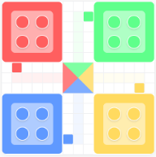

Ludo
StrategyLudo is a classic strategy board game for two to four players, where participants race their four tokens from start to finish based on the rolls of a single die.
Play NowFrom the courts of emperors to the courtyards of homes, explore the strategic depth and cultural richness of India's most beloved traditional pastimes.
Click on a game to explore its history, rules, and significance in Indian culture.
Ludo is a classic strategy board game for two to four players, where participants race their four tokens from start to finish based on the rolls of a single die.
Play NowChaturanga is a 7th-century Indian strategy game played on an 8x8 board that simulates a battlefield.
Play NowAlso known as Nine Men's Morris, is a traditional Indian strategy game played on a grid of three concentric squares where players aim to form rows of three to remove their opponent's pieces.
Play Nowa traditional South Indian "sowing" game played on a wooden board with fourteen pits, where players strategically distribute shells or seeds to capture the most pieces.
Learn moreA classic battle of strength versus numbers, requiring the tigers to leap over and capture goats while the goats must work together to block all possible tiger movements.
Learn more